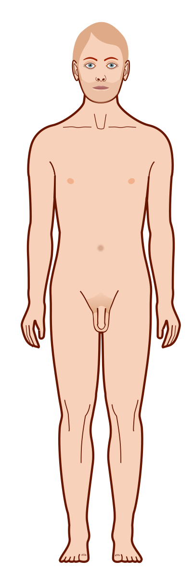

Explora los diferentes sistemas del cuerpo
Haz click en las diferentes áreas del cuerpo para aprender sobre enfermedades relacionadas:

Áreas interactivas:
- Pecho: Sistema circulatorio - Leucemia
- Abdomen superior: Hígado - Cirrosis
- Abdomen inferior: Intestinos - Colitis
- Abdomen central: Sistema digestivo - Cáncer
- Zona pélvica: Sistema reproductor - Sífilis
- Piernas: Extremidades - Dengue